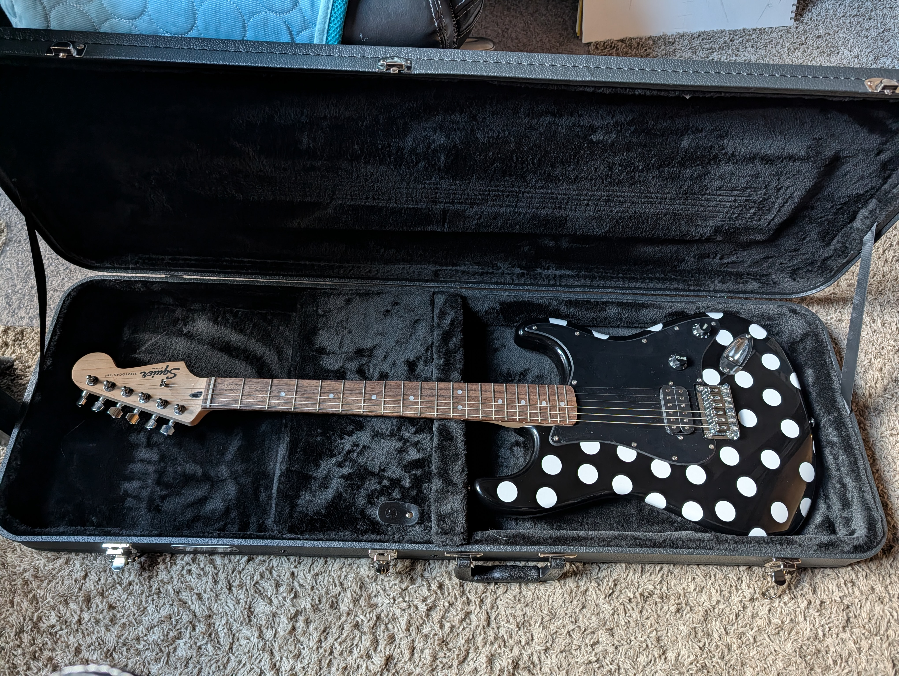

I first asked this question a few months ago, inspired by a viral math rock duo from Quebec. Now that I've finished my dissertation, I have more language for why it matters — and I'm still thinking about it.
Angine de Poitrine took the internet by storm with their microtonal guitars, alien costumes, and a sound that feels genuinely unreplicable. The comment sections filled up with people celebrating them as proof that human creativity can't be automated.
"AI: humans are done with music. Angine de Poitrine: hold my triangular Martian beer."
The sentiment is real and the enthusiasm is earned. But I think the framing misses something important — and understanding what it misses gets us closer to the actual question.
What AI Would Actually Struggle With
A pure AI model would struggle badly with what Khn and Klek do. The microtonality — tuning systems that fall between the standard Western semitones — is not a stylistic flourish you can prompt into existence. The asymmetric rhythms, the specific physical chemistry of two people who have been playing together for over twenty years, the costumes that started as a private joke and became a visual language — none of that emerges from a dataset. It accumulates through lived time.
These are deeply human systems. Not because they are complex, but because they are particular — shaped by specific people, specific relationships, specific choices made across decades that no training set captures.
The AdP fan community instinctively understands something that a lot of enterprise AI strategy misses entirely: what makes this music feel authentic isn't a quality you can isolate and replicate. It's an orientation. It's the evidence, in every measure, that two people have been chasing something genuinely their own for a very long time.
"Authenticity isn't about the absence of AI. It's about the presence of human intent."
Where I Land
A skilled human collaborating with AI can produce something entirely authentic — because the locus of authorship remains human. The AI becomes an instrument, like any other tool. What you make with it still belongs to you, in the same way a painting belongs to the painter and not the brush.
This is the same principle at the center of my dissertation research. In AI-assisted decision systems, keeping a human meaningfully in the loop isn't just an ethical checkbox. It's what makes the output mean something. Without genuine human understanding driving the process, you don't get authenticity — you get a sophisticated approximation that nobody actually owns.
The human doesn't just add a "human touch." The human is the reason the output has any meaning at all.
The Crisis Adoption Problem, Again
There's a related pattern I've been thinking about that connects here. I've started calling it the Crisis Adoption Problem: organizations reach for AI tools hardest exactly when they have the least capacity to evaluate them carefully. Speed substitutes for scrutiny. The human gets pushed further from the loop precisely when the loop needs them most.
The same dynamic plays out in creative domains. When the pressure to produce is highest — content quotas, publishing deadlines, competitive creative markets — people reach for AI generation fastest. And in that rush, the thing that makes output meaningful — the human mind genuinely driving it — gets quietly displaced.
You end up with something that looks like output. That functions as output. But that nobody, including its creator, fully owns.
Khn and Klek are not working under that kind of pressure. They have been chasing something genuinely their own for over twenty years. That's not a workflow. That's not a prompt. That's a life's work — and no amount of fine-tuning replicates it.

My black Squier Stratocaster — white polka dots added by hand, in true AdP spirit. 🖤🤍🎸
The Question Worth Sitting With
The comment sections celebrating AdP as proof that "AI can't do this" are responding to something real. There is something in that music that feels categorically resistant to automation. But I don't think the right frame is absence — the absence of AI, the absence of algorithms, the absence of assistance.
The right frame is presence. The overwhelming, unmistakable presence of two specific human minds, pursuing something specific, across a span of time no model can simulate.
That's what authenticity actually is. And it's available to anyone willing to be genuinely in the loop — with or without AI as a tool.
Watch Fabienk and tell me what you think — is authenticity about the absence of AI, or the presence of human intent?
Research Context
The ideas in this essay connect directly to my doctoral dissertation on human-AI trust calibration, completed at the University of Oklahoma's Gallogly College of Engineering under the advisement of Dr. Ghulam Jilani Quadri (DIV-Lab). The Crisis Adoption Problem is an original concept extending those findings into organizational AI adoption. The paper Interactive Features and Trust in AI-Assisted Camouflaged Object Detection: Evidence for the Understanding-Trust Gap is currently under review at ACM TOCHI.
Debra Hogue, PhD
Computer Scientist · Human-AI Collaboration Researcher · Oklahoma